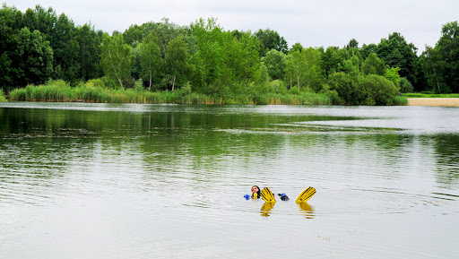
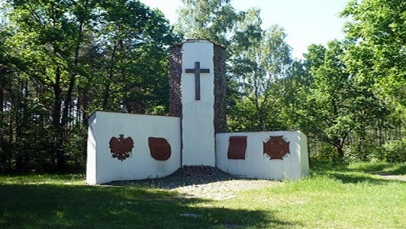
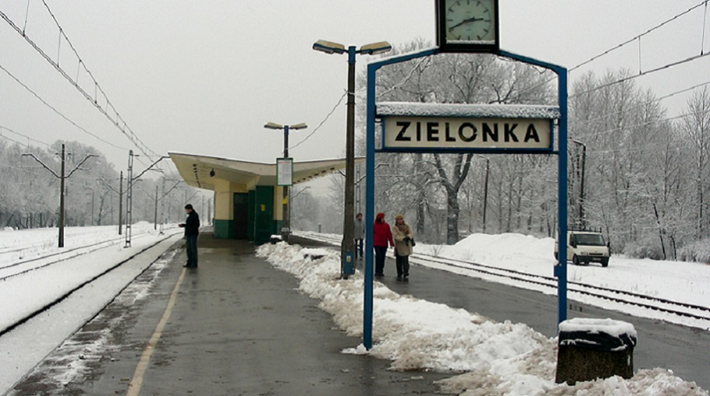

Zaledwie kilkanaście kilometrów od centrum Warszawy, na wschód od Wisły znajdą Państwo miejsce, które warto poznać. Dla jednych Zielonka to weekendowy wyjazd ze znajomymi lub rodziną, dla innych nowo odkryte, urokliwe miejsce, do którego chce się wracać jak do domu. To tutaj tętnią życiem Zielone Płuca Stolicy – miasto-ogród, w którym postawne, rozłożyste i wielowiekowe dęby dają schronienie turystom, tym z bliska i z daleka.
Zielonka, zwana Miastem Pod Dębami, to miejsce niepowtarzalne – unikalna enklawa, w gęsto zaludnionej aglomeracji warszawskiej, w której do dziś ponad dwie trzecie całej powierzchni gminy porastają lasy.



 Moje Miasto Zielonka
Moje Miasto Zielonka